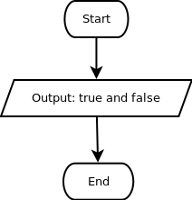

Hasil dari operasi boolean AND hanya akan benar jika kedua operand nya bernilai benar. Jadi true AND true akan menghasilkan nilai true, selain itu operasi AND akan menghasilkan nilai false.

Saya mau cari pacar yang cantik
dan sexy
dan bisa masak masakan eropa
dan tidak cengeng
dan penurut
dan tingginya 200 cm
dan motornya ninja, tapi merk nya bukan kawasaki
dan rambutnya pendek
dan agak panjang
dan bapaknya keturunan Zeus
dan sampai sekarang, saya masih jomblo...
~ Anak kelas 6 SD (kebanyakan nonton sinetron, kurang asupan DHA dan omega 3)